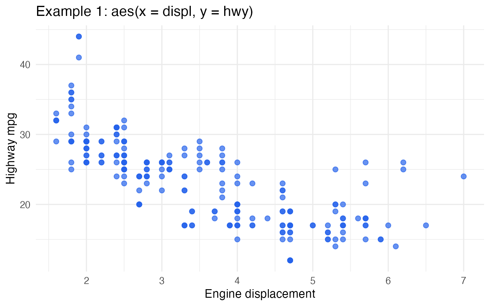
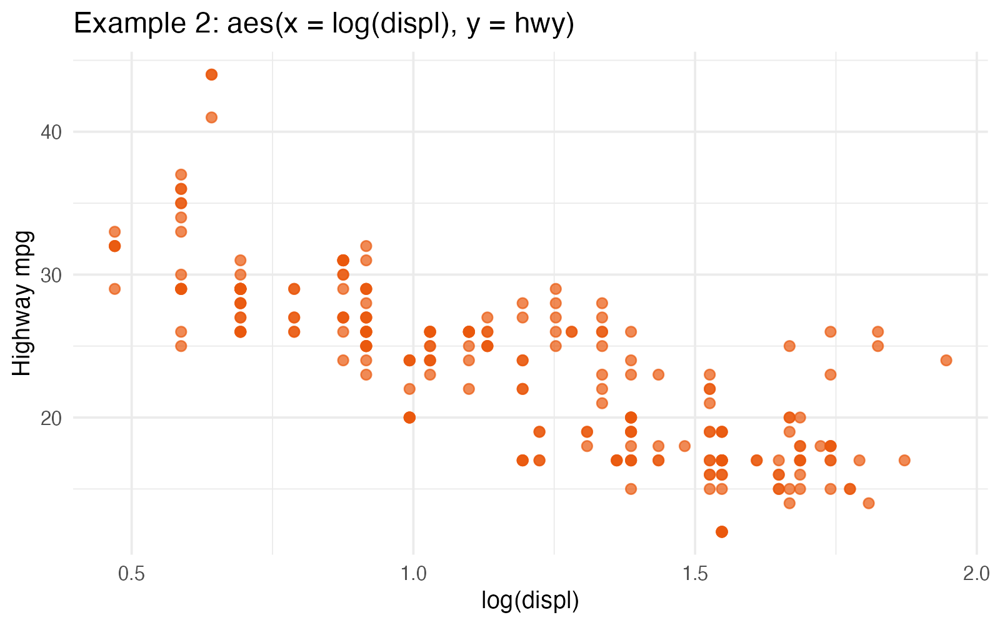
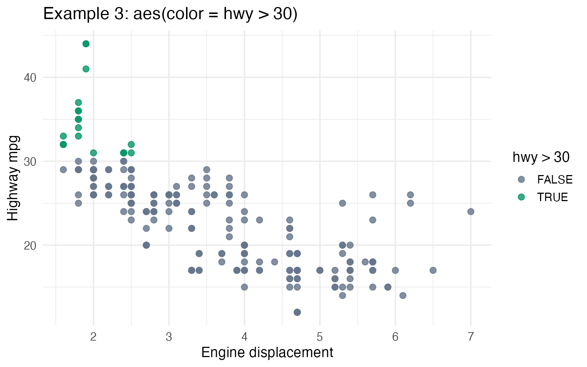
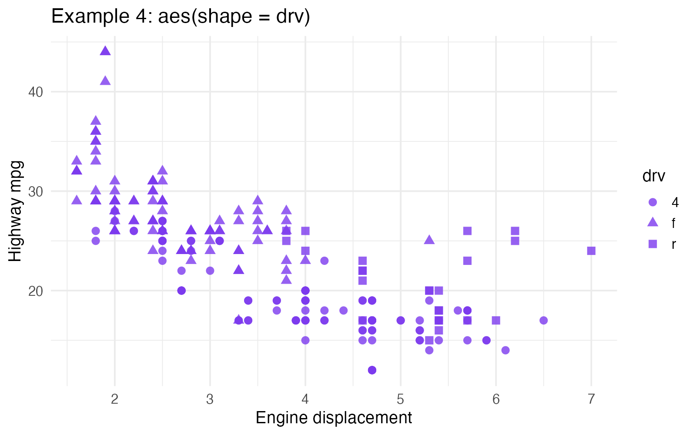

In today's blog, I want to briefly explain what aes() does in ggplot(). There are two main takeaways:
aes()maps variables from your dataset, or ones you create after transformation, to a new dataset: a visual dataset, which geoms then use to construct the plot.- All the variables that you feed into
aes()must have the same number of rows.
Understanding these two things helps build a mental model before making a plot, and it also means you do not have to memorize all the arguments that aes() can take.
Start with one built-in dataset
I think this is more helpful for beginners than inventing a tiny dataset from scratch, because you can run the example immediately on your own machine.
We will use mpg, a dataset that comes with ggplot2. The table below only shows the first 6 rows. The full dataset has 234 rows.
| manufacturer | displ | hwy | class | drv |
|---|---|---|---|---|
| audi | 1.8 | 29 | compact | f |
| audi | 1.8 | 29 | compact | f |
| audi | 2.0 | 31 | compact | f |
| audi | 2.0 | 30 | compact | 4 |
| audi | 2.8 | 26 | compact | 4 |
| audi | 2.8 | 26 | compact | 4 |
library(ggplot2)
head(mpg[, c("manufacturer", "displ", "hwy", "class", "drv")])The simple idea
aes() takes columns from your dataset and gives them new jobs in the plot. I like to think of it as making a small visual dataset that the geom can use later.
Example 1: map two columns to x and y
Suppose we write:
ggplot(mpg, aes(x = displ, y = hwy))
Before we even add a geom, aes() is already doing something useful. It is matching:
displtoxhwytoy
So the visual dataset begins like this:
| x | y |
|---|---|
| 1.8 | 29 |
| 1.8 | 29 |
| 2.0 | 31 |
| 2.0 | 30 |
| 2.8 | 26 |
| 2.8 | 26 |
Nothing has been drawn yet. We just have a new table that says where each row should go on the plot.
Then when we add a geom:
ggplot(mpg, aes(x = displ, y = hwy)) +
geom_point()
geom_point() uses that visual dataset and draws one point for each row.
Example 2: add a transformation
Now suppose we write:
ggplot(mpg, aes(x = log(displ), y = hwy))
This still works because log(displ) returns one value for each row of the dataset.
So the visual dataset still has the same number of rows. It begins like this:
| x | y |
|---|---|
| 0.588 | 29 |
| 0.588 | 29 |
| 0.693 | 31 |
| 0.693 | 30 |
| 1.030 | 26 |
| 1.030 | 26 |
Then we can draw the plot:
ggplot(mpg, aes(x = log(displ), y = hwy)) +
geom_point()
This example helps explain the second takeaway: transformed variables are fine inside aes() as long as they still give one value per row.
Example 3: create a new visual variable inside aes()
This is closer to one of the examples from my notes, where the mapping uses a logical statement.
ggplot(mpg, aes(x = displ, y = hwy, color = hwy > 30))Now aes() is matching:
displtoxhwytoyhwy > 30tocolor
So the visual dataset begins like this:
| x | y | color |
|---|---|---|
| 1.8 | 29 | FALSE |
| 1.8 | 29 | FALSE |
| 2.0 | 31 | TRUE |
| 2.0 | 30 | FALSE |
| 2.8 | 26 | FALSE |
| 2.8 | 26 | FALSE |
The new color column is made of TRUE and FALSE, but it still has one value per row.
Then we can draw it with a geom:
ggplot(mpg, aes(x = displ, y = hwy, color = hwy > 30)) +
geom_point()
Example 4: another mapping like the ones in my screenshot
Here is one more example using another argument inside aes():
ggplot(mpg, aes(x = displ, y = hwy, shape = drv))
Here drv is being mapped to shape, just like another dataset could map region to shape.
| x | y | shape |
|---|---|---|
| 1.8 | 29 | f |
| 1.8 | 29 | f |
| 2.0 | 31 | f |
| 2.0 | 30 | 4 |
| 2.8 | 26 | 4 |
| 2.8 | 26 | 4 |
And then the geom uses that mapping:
ggplot(mpg, aes(x = displ, y = hwy, shape = drv)) +
geom_point()
Conclusion
There are many other arguments that can go inside aes(), but the basic idea is the same.
- Start with a dataset.
- Map one or more columns to new visual roles.
- Let the geom draw using that mapped visual dataset.
Whether the mapping is x, y, color, shape, or something else, the core idea stays the same: take a column from your data, or create one through a transformation, and match it to a part of the plot.